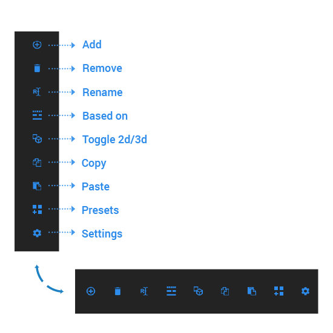
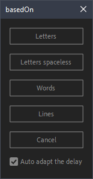
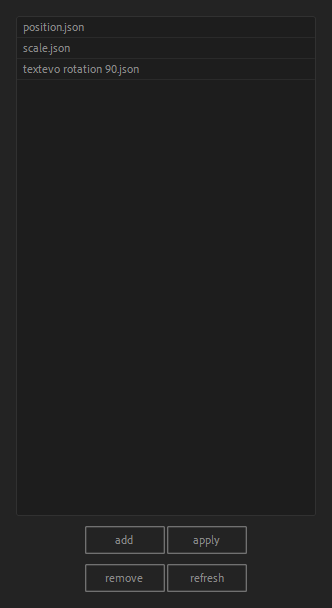
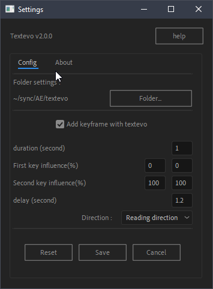

Interface
Textevo's interface is responsive and flexible, you can adjust it vertically or horizontally.

Add
Click = adds textvo to your selected texts.
Alt + Click = adds Textevo but with inverted keyframes (useful for an output animation for example)
If no layer is selected textvo will generate a text layer automatically.
(in active composition).
Always use the Remove and Rename buttons
A Textevo is made of two parts: the Textevo effect and a text animator on the text layer, linked by expressions. Removing or renaming the effect by hand only changes one of the two parts. Use the Remove and Rename buttons of the panel, which handle both.
Remove
Deletes one or all instances of textvo, depending on whether an effect or layer(s) is selected.
The effect and its text animator are removed. If you delete the effect by hand, its text animator stays on the layer with expression errors, and has to be deleted by hand too.
Rename
Renames the selected Textevo effect and its text animator together.
If you rename the effect by hand, After Effects updates the expressions but not the name of the text animator, so the effect and its animator no longer have the same name in the timeline.
Based on
This opens a window with options allowing you to choose whether the animation will be split by letters, letters spacesless, words or lines.

the "Auto adapt the delay" checkbox
Adjusts the delay according to the number of instances. For example switching from a 12 letter animation to 3 words will adjust the delay with a ratio of 4 (12 / 3).
Toggle 2d/3d
Activate and deactivate 3d per character
Copy
Copies all the Textevo or only the selected ones.
Paste
Paste the textevo(s) you previously copied on the selected layer(s).
Click = the keyframes keep their position from the in point of the layer: a key on the first frame of the copied layer lands on the first frame of the target layer.
Alt + Click = the first keyframe lands at the current time.
Presets
Click = Opens a preset management window. Shift + click = saves the current selection as a preset.
In the presets window, apply (or a double click) applies the preset from the in point of the layer. Alt + click (or Alt + double click) puts the first keyframe at the current time.
Presets saved with an older version
Presets saved before Textevo 2026 stored their keyframes from the start of the composition, so they could land far after the text layer, sometimes outside of the composition. When the presets window opens, Textevo detects them and offers to update them so they start at the in point of the layer. A copy of the original files is kept in the backup_before_2026 folder of your presets.

Settings
Opens the configuration window. You can change the default behaviors.
